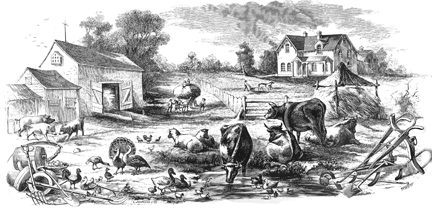

COLUMBIA'S ANIMALS, Etc.
1860
from Schedule 4.
"Productions of Agriculture in Township No 2
in the County of Tuolumne in the State of California
enumerated by me, in the Month of July 1860
J.J. Franklin Ass't Marshal.
Post Office Columbia."

© Floyd D.P.Øydegaard.
Typical Farm - 1860.

I recently discovered a census list that shows the names of farmers and animal owners with property value and the quantity of said animals and some product. The trouble with such a list is limited to who they contacted in and around the Township 2 area of Columbia. The list is not in any alphabetical order. Listed just how they were recorded in July of 1860.
The names are under the heading Owner, Agent or manager.
To simplify the listings I will just name the category after the number or cash value in each column.
J. McNulty - 2 Improved Acres, 158 Unimproved Acres, 500 Cash Value Farm.
R. Dayton - 480 Unimproved Acres, 2000 Cash Value Farm, 5 Horses, 1 Asses&Mules, 4 Milch cows, 8 Working Oxen, 30 Other Cattle, 2000 Value of Live Stock, 30 Hay, Tons of
H. Luvall - 80 Improved Acres, 80 Unimproved Acres, 2000 Cash Value Farm, 1 Horses, 9 Working Oxen, 30 Other Cattle, 2000 Value of Live Stock.
Smith Morse &Co - 40 Improved Acres, 440 Unimproved Acres, 5000 Cash Value Farm, 3 Horses, 12 Asses&Mules, 1 Milch cows, 14 Working Oxen, 5000 Value of Live Stock.
F. Way &Co - 480 Unimproved Acres, 1000 Cash Value Farm, 11 Working Oxen, 1000 Value of Live Stock.
J. Daluka - 5 Asses&Mules, 250 Value of Live Stock.
J. Bailey - 10 Improved Acres, 150 Unimproved Acres, 500 Cash Value Farm, 50 Impliments&Machinery, 3 Milch cows, 4 Other Cattle, 8 Swine, 200 Value of Live Stock,
C. Maisson - 160 Unimproved Acres, 160 Cash Value Farm, 1 Horses, 3 Asses&Mules, 150 Value of Live Stock.
J. Dermouville (Desmanville) - 8 Asses&Mules, 250 Value of Live Stock.
A.B. Frecka (Fiske) - 50 Improved Acres, 270 Unimproved Acres, 1500 Cash Value Farm, 200 Impliments&Machinery, 4 Working Oxen, 400 Value of Live Stock, 30 Hay, Tons of.
J Centay - 6 Horses, 2 Asses&Mules, 45 Milch cows, 25 Other Cattle, 2000 Value of Live Stock, 50 Hay, Tons of.
V.A. Cross - 14 Improved Acres, 19 Unimproved Acres, 900 Cash Value Farm, 50 Impliments&Machinery, 2 Horses, 150 Value of Live Stock, 4 Rye, Bushels of, 5000 Value of Orchard, production in dollars.
Russell & Stickman(Stickner) - 20 Improved Acres, 180 Unimproved Acres, 2000 Cash Value Farm, 150 Impliments&Machinery, 2 Horses, 21 Milch cows, 8 Swine, 1200 Value of Live Stock, 50 Hay, Tons of.
A. Biscal - 4 Improved Acres, 500 Cash Value Farm, 4 Horses, 1 Asses&Mules, 3 Swine, 1000 Value of Live Stock.
C Bridges - 8 Improved Acres, 20 Unimproved Acres, 1000 Cash Value Farm.
W.A. Lewis - 2 Horses, 250 Value of Live Stock.
J Dalling(Dalley) - 30 Improved Acres, 500 Cash Value Farm, 150 Impliments&Machinery, 3 Horses, 2 Asses&Mules, 400 Value of Live Stock.
Warren & Russel - 40 Improved Acres, 260 Unimproved Acres, 1500 Cash Value Farm, 150 Impliments&Machinery, 1 Horses, 1 Asses&Mules, 400 Value of Live Stock
E. Mitchell - 60 Improved Acres, 1500 Cash Value Farm, 100 Impliments&Machinery, 1 Horses, 40 Value of Live Stock
E. Dayley - 4 Working Oxen, 200 Value of Live Stock
J.M. Williams - 10 Improved Acres, 10 Unimproved Acres, 1000 Cash Value Farm, 3 Asses&Mules, 3 Milch cows, 200 Value of Live Stock, 1000 Value of Orchard, production in dollars, 1000 Value of Production of Market Gardens
D. Johnson - 60 Improved Acres, 100 Unimproved Acres, 200 Cash Value Farm, 100 Impliments&Machinery, 2 Horses, 2 Milch cows, 12 Other Cattle, 500 Value of Live Stock
Browton - 16 Improved Acres, 304 Unimproved Acres, 3000 Cash Value Farm, 150 Impliments&Machinery, 3 Horses, 35 Milch cows, 6 Other Cattle, 5000 Value of Live Stock
D. Graham - 5 Improved Acres, 2 Unimproved Acres, 200 Cash Value Farm, 2 Horses, 1 Milch cows, 1 Other Cattle, 200 Value of Live Stock
C.E. Nelson - 1 Improved Acres, 159 Unimproved Acres, 200 Cash Value Farm, 9 Swine, 100 Value of Live Stock
J. Andrews - 2 Horses, 10 Asses&Mules, 1500 Value of Live Stock
J. Grawl - 12 Horses, 2400 Value of Live Stock
W.H. Hasses - 12 Horses, 2000 Value of Live Stock
B. Hahn - 4 Improved Acres, 5000 Cash Value Farm, 100 Impliments&Machinery, 1500 Value of Orchard, production in dollars, 1000 Value of Production of Market Gardens
Gorham & Parker - 2 Horses, 500 Value of Live Stock
J.T. Bonnell - 1 Horses, 100 Value of Live Stock
T Lewis - 50 Improved Acres, 320 Unimproved Acres, 2000 Cash Value Farm, 200 Impliments&Machinery, 5 Horses, 8 Milch cows, 4 Working Oxen, 12 Other Cattle, 25 Swine, 2000 Value of Live Stock
J.A. Shea - 1 Horses, 5 Asses&Mules, 500 Value of Live Stock
J. Ferguson - 9 Working Oxen, 700 Value of Live Stock
V.R. Raymond - 3 Horses, 500 Value of Live Stock
S. Knapp - 1 Horses, 6 Asses&Mules, 16 Working Oxen, 1500 Value of Live Stock
Mullen & Williams - 12 Horses, 1 Milch cows, 3 Other Cattle, 2500 Value of Live Stock
C.H. Parsons - 32 Improved Acres, 4000 Cash Value Farm, 300 Impliments&Machinery, 4 Horses, 400 Value of Live Stock 250 Wheat, Bushels of
C. M. Hardin - 2 Horses, 200 Value of Live Stock
H.W. Brown - 1 Milch cows, 1 Other Cattle, 150 Value of Live Stock
(end of page 1)
J.B. Polk - 35 Improved Acres, 125 Unimproved Acres, 1000 Cash Value Farm, 150 Impliments&Machinery, 2 Milch cows, 2 Working Oxen, 1 Other Cattle, 6 Swine, 500 Value of Live Stock,
J.M. Bowman - 31 Improved Acres, 130 Unimproved Acres, 1000 Cash Value Farm, 150 Impliments&Machinery, 2 Horses, 5 Milch cows, 14 Other Cattle 500 Value of Live Stock
W.A. Boyer - 4 Horses, 29 Milch cows, 4Working Oxen, 63 Other Cattle, 2 Sheep, 2 Swine, 4000 Value of Live Stock
J. Craw - 1 Milch cows, 8 Other Cattle, 200 Value of Live Stock
J.W. Savage(?) - 3 Horses, 12 Milch cows, 54 Other Cattle, 1500 Value of Live Stock
A. Schelling - 2 Improved Acres, 1800 Cash Value Farm, 50 Impliments&Machinery, 1600 Value of Orchard, production in dollars, 500 Wine, Gallons of
S.N. Kendall - 3 Improved Acres, 300 Unimproved Acres, 3000 Cash Value Farm, 100 Impliments&Machinery, 10 Horses, 200 Other Cattle, 300 Sheep, 200 Swine, 2000 Value of Live Stock, 1200 Value of Orchard, production in dollars, 300 Wine, Gallons of
E.C. Storm - 2 Improved Acres, 1000 Cash Value Farm, 9 Horses, 1800 Value of Live Stock, 500 Value of Orchard, production in dollars
Soderer & Marden(?) - 7 Horses, 1 Asses&Mules, 400 Value of Live Stock
J. Ramey - 3 Improved Acres, 1500 Cash Value Farm, 50 Impliments&Machinery, 150 Honey, Lbs of
M. McCandle - 1 Milch cows, 1 Other Cattle, 75 Value of Live Stock
P. McElnor(?) - 1 Horses, 300 Value of Live Stock
J.S. Donnelly - 1 Horses, 8 Asses&Mules, 1400 Value of Live Stock
A.S. Pirson(Penson) - 2 Horses, 300 Value of Live Stock
H. Peley(?) - 1500 Unimproved Acres, 2000 Cash Value Farm, 3 Horses, 25 Other Cattle, 50 Sheep, 150 Swine, 3000 Value of Live Stock
C. Patterson - 10 Horses, 4 Working Oxen, 1500 Value of Live Stock
A. Grosini - 40 Improved Acres, 120 Unimproved Acres, 2000 Cash Value Farm, 100 Impliments&Machinery, 3 Horses, 45 Milch cows, 30 Swine, 3000 Value of Live Stock, 30 Hay, Tons of
J. McCabe(?) - 4 Milch cows, 4 Other Cattle, 400 Value of Live Stock
Edwards &Co - 2 Horses, 500 Value of Live Stock
McClure(?) &Co - 2 Horses, 200 Value of Live Stock
G.W. Morningttas(?) - 3 Horses, 17 Milch cows, 17 Other Cattle, 1700 Value of Live Stock
F.J. Berd(Bird) - 21 Improved Acres, 3000 Cash Value Farm, 100 Impliments&Machinery, 1 Horses, 2 Milch cows, 2 Other Cattle, 200 Value of Live Stock
J. Black - 1 Asses&Mules, 250 Value of Live Stock, 3000 Value of Orchard, production in dollars, 1200 Wine, Gallons of, 500 Value of Production of Market Gardens
L. Hogle - 3 Horses, 6 Asses&Mules, 1600 Value of Live Stock
W.J. Saunders - 3 Working Oxen, 400 Value of Live Stock
J. Ward - 4 Horses, 1 Milch cows, 275 Value of Live Stock
P. Forharty - 1 Horses, 1 Milch cows, 4 Working Oxen, 1 Other Cattle, 400 Value of Live Stock
O. Lynch &Co - 1 Horses, 150 Value of Live Stock
O. Lynch - 5 Milch cows, 8 Other Cattle, 300 Value of Live Stock
M. McGrath - 1 Horses, 150 Value of Live Stock
McEwin &Co - 1 Horses, 150 Value of Live Stock
Kinsley &Co - 1 Horses, 150 Value of Live Stock
C. Ward - 1 Horses, 1 Asses&Mules, 6 Milch cows, 1 Swine, 600 Value of Live Stock
W. Kinsley - 4 Improved Acres,1000 Cash Value Farm, 50 Impliments&Machinery
Hastam &Co - 1 Horses, 100 Value of Live Stock
B. Forbes - 1 Horses, 1 Milch cows, 1 Other Cattle, 200 Value of Live Stock
L. Gillam &Co - 1 Horses, 100 Value of Live Stock
A. Burnett - 6 Working Oxen, 300 Value of Live Stock
A. North &Co - 1 Horses, 100 Value of Live Stock
J. Echols - 1 Horses, 150 Value of Live Stock
(end of page 2)
T.B. Woods - 8 Milch cows, 2000 Value of Live Stock
Duain &Co - 1 Horses, 100 Value of Live Stock
Murray &Co - 1 Horses, 100 Value of Live Stock
Whitting &Co - 2 Horses, 500 Value of Live Stock
Austin &Co - 1 Horses, 300 Value of Live Stock
T Swan &Co - 6 Working Oxen, 300 Value of Live Stock
N Lincoln - 4 Working Oxen, 200 Value of Live Stock
J. Set - 40 Improved Acres, 100 Cash Value Farm, 1 Horses, 7 Milch cows, 8 Other Cattle, 300 Value of Live Stock
H.B. Gaple(?) - 7 Horses, 2 Milch cows, 2 Other Cattle, 15 Swine, 1500 Value of Live Stock
G.B. Hodges - 1 Horses, 3 Asses&Mules, 2 Milch cows, 1 Sheep, 500 Value of Live Stock
A. Faley(?) - 10 Improved Acres, 210 Unimproved Acres, 500 Cash Value Farm
Saratoga Co - 1 Horses, 400 Value of Live Stock
G.C. Lucus - 4 Improved Acres, 200 Cash Value Farm, 2 Horses, 2 Asses&Mules, 4 Milch cows, 10 Other Cattle, 34 Swine, 1000 Value of Live Stock
A. Reed - 1 Horses, 300 Value of Live Stock
W. Wheeler - 1 Horses, 22 Milch cows, 1000 Value of Live Stock
N. Bounan - 3 Horses, 6 Milch cows, 20 Other Cattle, 600 Value of Live Stock
L. Storm(Storer) - 80 Improved Acres, 260 Unimproved Acres, 4000 Cash Value Farm, 200 Impliments&Machinery, 3 Horses, 13 Milch cows, 2 Working Oxen, 46 Other Cattle, 12 l Swine, 1500 Value of Live Stock 150 Wheat, Bushels of, 75 Rye, Bushels of,
A. Gibbon &Co - 3 Horses, 500 Value of Live Stock
S. Enslem &Co - 2 Horses, 13 Other Cattle, 6 Sheep, 30 l Swine, 500 Value of Live Stock
J.B. Morris - 5 Asses&Mules, 1100 Value of Live Stock
R. Rupoley(Rufoley) - 1 Milch cows, 1 Other Cattle, 150 Value of Live Stock
W. J. Markley - 1 Horses, 8 Asses&Mules, 1 Sheep, 1 Swine, 1000 Value of Live Stock
A.W. Davis - 1 Horses, 6 Asses&Mules, 1000 Value of Live Stock
W. Sperry - 2 Horses, 300 Value of Live Stock
B. Dupres - 1 Milch cows, 2 Swine, 100 Value of Live Stock
S.B. Scisson - 2 Milch cows, 6 Swine, 200 Value of Live Stock
A.M. Moppin - 100 Improved Acres, 60 Unimproved Acres, 1500 Cash Value Farm, 300 Impliments&Machinery, 1 Horses, 100 Value of Live Stock
D.A. Jemison - 50 Improved Acres, 110 Unimproved Acres, 1500 Cash Value Farm, 150 Impliments&Machinery, 1 Horses, 1 Asses&Mules, 9 Milch cows, 16 Other Cattle, 5 Swine, 600 Value of Live Stock
W. Burbridgeo(?) - 60 Improved Acres, 100 Unimproved Acres, 2000 Cash Value Farm, 2 Horses, 1 Asses&Mules, 1 Milch cows, 1 Other Cattle, 500 Value of Live Stock
C. Essik - 2 Working Oxen, 150 Value of Live Stock
H. Petters - 80 Improved Acres, 90 Unimproved Acres, 4000 Cash Value Farm, 200 Impliments&Machinery, 6 Horses, 3 Milch cows, 3 Other Cattle, 800 Value of Live Stock
J.T. Sellman - 60 Improved Acres,100 Unimproved Acres, 2500 Cash Value Farm, 200 Impliments&Machinery, 2 Horses, 22 Milch cows, 40 Other Cattle, 11 Swine, 2000 Value of Live Stock
O.P. Gale - 30 Improved Acres, 130 Unimproved Acres, 2000 Cash Value Farm, 100 Impliments&Machinery, 4 Horses, 9 Milch cows, 2 Working Oxen, 13 Other Cattle, 135 Sheep, 12 Swine, 1000 Value of Live Stock
H. Thompson - 25 Improved Acres, 135 Unimproved Acres, 2000 Cash Value Farm, 200 Impliments&Machinery, 3 Horses, 5 Milch cows, 20 Other Cattle, 2 Swine,1000 Value of Live Stock
B. Curigan - 10 Improved Acres, 310 Unimproved Acres, 1000 Cash Value Farm, 50 Impliments&Machinery, 4 Milch cows, 2 Working Oxen, 8 Other Cattle, 15 Sheep, 300 Value of Live Stock
T. McCarle - 10 Improved Acres, 150 Unimproved Acres, 500 Cash Value Farm, 50 Impliments&Machinery, 1 Horses, 5 Milch cows, 7 Other Cattle, 300 Value of Live Stock
J. Ont(Ort) - 2 Horses, 3 Milch cows, 3 Other Cattle, 25 Sheep, 12 Swine, 400 Value of Live Stock
T.E. Carrington - 1 Horses, 1 Asses&Mules, 15 Sheep, 2 Swine, 200 Value of Live Stock
J.M. Sullivan - 10 Milch cows, 10 Other Cattle, 500 Value of Live Stock
(end of 3rd page)
NOTE: This page ends without the second page showing any possible additions to the list.
NOTE: Any additional information on these individuals listed here would be much appreciated.
ANIMAL COUNT: 233 Horses, 103 Asses &/or Mules, 393 Milk Cows, 120 Working Oxen, 747 Other Cattle, 550 Sheep and 586 Pigs.

This page is created for the benefit of the public by
Floyd D. P. Øydegaard
Email contact:
fdpoyde3 (at) Yahoo (dot) com
A WORK IN PROGRESS,
created for the visitors to the Columbia State Historic park.
© Columbia State Historic Park & Floyd D. P. Øydegaard.